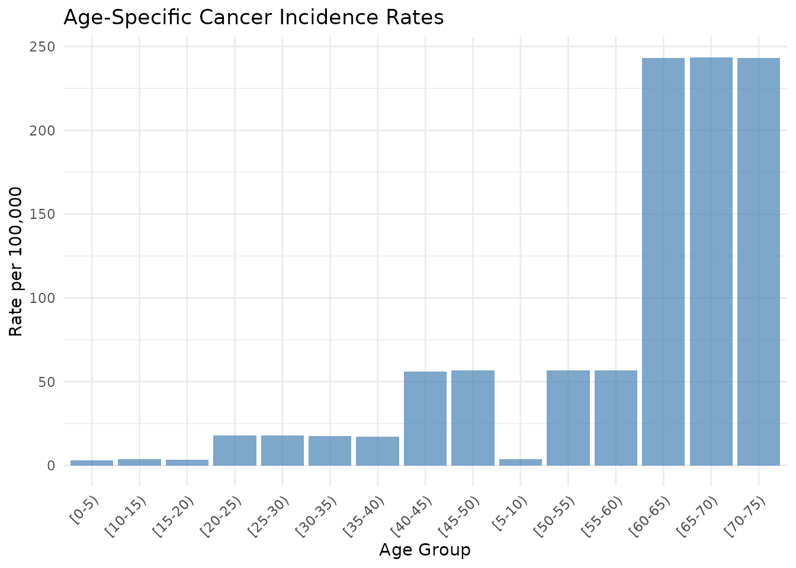
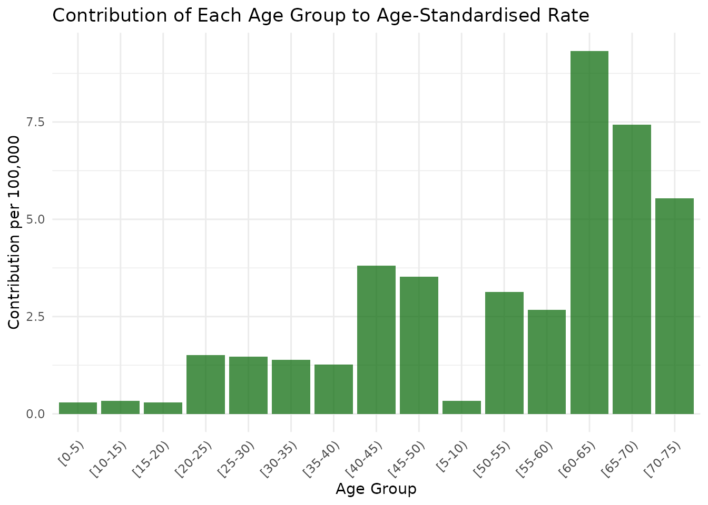

library(epiUtils)
library(dplyr)
#>
#> Attaching package: 'dplyr'
#> The following objects are masked from 'package:stats':
#>
#> filter, lag
#> The following objects are masked from 'package:base':
#>
#> intersect, setdiff, setequal, union
library(ggplot2)Introduction
The epiUtils package provides essential tools for
epidemiological analysis, including:
- Age-standardised rate calculations using direct standardisation
- Person-years computation for cohort studies with age stratification
- Built-in WHO 2000-2025 World Standard Population data
This vignette demonstrates the key functions using practical examples.
WHO World Standard Population
The package includes the WHO 2000-2025 World Standard Population data, which is commonly used for age standardisation in epidemiological studies.
# Load the WHO standard population data
data("who_2000_2025_standard_population")
# View the structure
head(who_2000_2025_standard_population)
#> # A tibble: 6 × 6
#> age_group who_world_standard_perc…¹ recalculation_to_add…² rounded_to_integers
#> <chr> <dbl> <dbl> <int>
#> 1 0-4 8.86 88569. 88569
#> 2 5-9 8.69 86870. 86870
#> 3 10-14 8.6 85970. 85970
#> 4 15-19 8.47 84670. 84670
#> 5 20-24 8.22 82171. 82171
#> 6 25-29 7.93 79272. 79272
#> # ℹ abbreviated names: ¹who_world_standard_percent,
#> # ²recalculation_to_add_to_1million
#> # ℹ 2 more variables: standard_for_seer_stat <int>, lower_age_limit <int>
# Summary of the data
str(who_2000_2025_standard_population)
#> tibble [21 × 6] (S3: tbl_df/tbl/data.frame)
#> $ age_group : chr [1:21] "0-4" "5-9" "10-14" "15-19" ...
#> $ who_world_standard_percent : num [1:21] 8.86 8.69 8.6 8.47 8.22 7.93 7.61 7.15 6.59 6.04 ...
#> $ recalculation_to_add_to_1million: num [1:21] 88569 86870 85970 84670 82171 ...
#> $ rounded_to_integers : int [1:21] 88569 86870 85970 84670 82171 79272 76073 71475 65877 60379 ...
#> $ standard_for_seer_stat : int [1:21] 88569 86870 85970 84670 82171 79272 76073 71475 65877 60379 ...
#> $ lower_age_limit : int [1:21] 0 5 10 15 20 25 30 35 40 45 ...Example 1: Calculate Person-Years by Age Strata
Let’s start with an example of calculating person-years for a cohort study. We’ll create some example data and then use the built-in function.
# Create example cohort data
set.seed(123)
n_patients <- 100
cohort_data <- data.frame(
patient_id = 1:n_patients,
dob = as.Date("1950-01-01") + sample(-7300:7300, n_patients, replace = TRUE), # Random dates ±20 years
study_entry_date = as.Date("2020-01-01") + sample(0:365, n_patients, replace = TRUE),
study_exit_date = as.Date("2023-01-01") + sample(0:730, n_patients, replace = TRUE),
event_status = sample(c(0L, 1L), n_patients, replace = TRUE, prob = c(0.8, 0.2))
)
# Ensure study_exit_date is after study_entry_date
cohort_data$study_exit_date <- pmax(
cohort_data$study_exit_date,
cohort_data$study_entry_date + 30
)
# View first few rows
head(cohort_data)
#> patient_id dob study_entry_date study_exit_date event_status
#> 1 1 1936-10-03 2020-10-12 2023-05-05 0
#> 2 2 1936-11-20 2020-06-07 2023-09-22 0
#> 3 3 1958-07-16 2020-04-30 2023-07-05 1
#> 4 4 1953-11-18 2020-04-19 2024-07-26 0
#> 5 5 1964-03-10 2020-06-06 2023-09-09 0
#> 6 6 1938-03-10 2020-03-04 2024-04-02 0
# Calculate person-years by 5-year age groups (default)
person_years_5yr <- calculate_person_years_by_age_strata(cohort_data)
print(person_years_5yr)
#> # A tibble: 20 × 4
#> age_group person_years events n
#> <fct> <dbl> <int> <int>
#> 1 [0-5) 0 0 0
#> 2 [5-10) 0 0 0
#> 3 [10-15) 0 0 0
#> 4 [15-20) 0 0 0
#> 5 [20-25) 0 0 0
#> 6 [25-30) 0 0 0
#> 7 [30-35) 0 0 0
#> 8 [35-40) 0 0 0
#> 9 [40-45) 0 0 0
#> 10 [45-50) 0 0 0
#> 11 [50-55) 28.5 0 14
#> 12 [55-60) 48.5 5 24
#> 13 [60-65) 50.6 4 25
#> 14 [65-70) 66.5 3 29
#> 15 [70-75) 42.7 0 21
#> 16 [75-80) 27.6 4 18
#> 17 [80-85) 42.2 0 20
#> 18 [85-90) 32.5 1 21
#> 19 [90-95) 16.3 1 7
#> 20 [95-100) 0 0 0
# Calculate person-years using custom age groups (10-year groups)
person_years_10yr <- calculate_person_years_by_age_strata(
cohort_data,
age_cut_points = c(0, 10, 20, 30, 40, 50, 60, 70, 80, 90, 100)
)
print(person_years_10yr)
#> # A tibble: 10 × 4
#> age_group person_years events n
#> <fct> <dbl> <int> <int>
#> 1 [0-10) 0 0 0
#> 2 [10-20) 0 0 0
#> 3 [20-30) 0 0 0
#> 4 [30-40) 0 0 0
#> 5 [40-50) 0 0 0
#> 6 [50-60) 77.0 5 24
#> 7 [60-70) 117. 7 39
#> 8 [70-80) 70.3 4 30
#> 9 [80-90) 74.7 1 28
#> 10 [90-100) 16.3 1 7Example 2: Age-Standardised Rates with WHO Standard Population
Now let’s calculate age-standardised incidence rates using the WHO standard population. We’ll use the person-years data we just calculated.
# Prepare data for ASR calculation using WHO standard population
# We need to match our age groups to the WHO standard population
# First, let's see what age groups we have in our person-years data
print("Age groups in our data:")
#> [1] "Age groups in our data:"
print(person_years_10yr$age_group)
#> [1] [0-10) [10-20) [20-30) [30-40) [40-50) [50-60) [60-70) [70-80)
#> [9] [80-90) [90-100)
#> 10 Levels: [0-10) [10-20) [20-30) [30-40) [40-50) [50-60) [60-70) ... [90-100)
print("Age groups in WHO standard population:")
#> [1] "Age groups in WHO standard population:"
print(who_2000_2025_standard_population$age_group)
#> [1] "0-4" "5-9" "10-14" "15-19" "20-24" "25-29" "30-34" "35-39" "40-44"
#> [10] "45-49" "50-54" "55-59" "60-64" "65-69" "70-74" "75-79" "80-84" "85-89"
#> [19] "90-94" "95-99" "100+"
# Create a mapping to match our 10-year age groups to WHO standard population
# We'll aggregate WHO age groups to match our 10-year groups
who_aggregated <- who_2000_2025_standard_population |>
mutate(
age_group_10yr = case_when(
lower_age_limit < 10 ~ "[0-10)",
lower_age_limit < 20 ~ "[10-20)",
lower_age_limit < 30 ~ "[20-30)",
lower_age_limit < 40 ~ "[30-40)",
lower_age_limit < 50 ~ "[40-50)",
lower_age_limit < 60 ~ "[50-60)",
lower_age_limit < 70 ~ "[60-70)",
lower_age_limit < 80 ~ "[70-80)",
lower_age_limit < 90 ~ "[80-90)",
TRUE ~ "[90-100)"
)
) |>
group_by(age_group_10yr) |>
summarise(
standard_pop = sum(standard_for_seer_stat),
.groups = "drop"
)
print("Aggregated WHO standard population:")
#> [1] "Aggregated WHO standard population:"
print(who_aggregated)
#> # A tibble: 10 × 2
#> age_group_10yr standard_pop
#> <chr> <int>
#> 1 [0-10) 175439
#> 2 [10-20) 170640
#> 3 [20-30) 161443
#> 4 [30-40) 147548
#> 5 [40-50) 126256
#> 6 [50-60) 99165
#> 7 [60-70) 66777
#> 8 [70-80) 37287
#> 9 [80-90) 13495
#> 10 [90-100) 1950
# Merge with our person-years data
asr_data <- person_years_10yr |>
left_join(who_aggregated, by = c("age_group" = "age_group_10yr")) |>
filter(!is.na(standard_pop)) |> # Remove any age groups not in WHO data
filter(person_years > 0) |> # Ensure positive person-years for all groups
select(age_group, events, person_years, standard_pop)
print("Data prepared for ASR calculation:")
#> [1] "Data prepared for ASR calculation:"
print(asr_data)
#> # A tibble: 5 × 4
#> age_group events person_years standard_pop
#> <chr> <int> <dbl> <int>
#> 1 [50-60) 5 77.0 99165
#> 2 [60-70) 7 117. 66777
#> 3 [70-80) 4 70.3 37287
#> 4 [80-90) 1 74.7 13495
#> 5 [90-100) 1 16.3 1950
# Calculate age-standardised rates
asr_result <- calculate_asr_direct(asr_data)
#> Warning: ! Found age groups with small/zero case counts:
#> • < 5 cases: [70-80) (4 cases), [80-90) (1 case), [90-100) (1 case)
#> ℹ Small and zero case counts may produce unstable rate estimates
#> ℹ Consider wider age groups, longer follow-up, or data quality checks
# Display results
print("Age-Standardised Rate Results:")
#> [1] "Age-Standardised Rate Results:"
print(paste("Crude rate:", round(asr_result$crude_rate_scaled, 2), "per 100,000"))
#> [1] "Crude rate: 5064.91 per 100,000"
print(paste("Age-standardised rate:", round(asr_result$asr_scaled, 2), "per 100,000"))
#> [1] "Age-standardised rate: 5879.46 per 100,000"
print(paste("95% CI:", round(asr_result$ci_lower_scaled, 2), "-", round(asr_result$ci_upper_scaled, 2)))
#> [1] "95% CI: 3219.59 - 10140.92"
# View age-specific details
print("Age-specific details:")
#> [1] "Age-specific details:"
print(asr_result$age_specific_data[[1]])
#> # A tibble: 5 × 8
#> age_group events person_years standard_pop age_specific_rate std_weight
#> <chr> <int> <dbl> <int> <dbl> <dbl>
#> 1 [50-60) 5 77.0 99165 0.0650 0.453
#> 2 [60-70) 7 117. 66777 0.0598 0.305
#> 3 [70-80) 4 70.3 37287 0.0569 0.171
#> 4 [80-90) 1 74.7 13495 0.0134 0.0617
#> 5 [90-100) 1 16.3 1950 0.0614 0.00892
#> # ℹ 2 more variables: age_specific_rate_scaled <dbl>, contribution_to_asr <dbl>
# Note: We filtered out age groups with zero person-years above
# The function requires positive person-years but allows zero/small case countsHandling Small Case Counts
The calculate_asr_direct() function includes built-in
warnings for small case counts, which help users make informed decisions
about age grouping strategies. The warnings are raised regardless of the
confidence interval method used.
# Create example data with small case counts to demonstrate warnings
small_cases_data <- data.frame(
age_group = c("0-20", "20-40", "40-60", "60-80"),
events = c(0L, 2L, 4L, 15L), # Mix of zero and small case counts
person_years = c(10000, 15000, 20000, 18000),
standard_pop = c(25000, 30000, 20000, 15000)
)
print("Data with small case counts:")
#> [1] "Data with small case counts:"
print(small_cases_data)
#> age_group events person_years standard_pop
#> 1 0-20 0 10000 25000
#> 2 20-40 2 15000 30000
#> 3 40-60 4 20000 20000
#> 4 60-80 15 18000 15000
# Calculate ASR - will show warnings about small case counts
print("With warnings (default):")
#> [1] "With warnings (default):"
result_with_warnings <- calculate_asr_direct(small_cases_data)
#> Warning: ! Found age groups with small/zero case counts:
#> • zero cases: 0-20 and < 5 cases: 20-40 (2 cases), 40-60 (4 cases)
#> ℹ Small and zero case counts may produce unstable rate estimates
#> ℹ Consider wider age groups, longer follow-up, or data quality checks
# Calculate ASR with warnings disabled
print("With warnings disabled:")
#> [1] "With warnings disabled:"
result_no_warnings <- calculate_asr_direct(small_cases_data, warn_small_cases = FALSE)
# Results are identical regardless of warning setting
print(paste("ASR:", round(result_with_warnings$asr_scaled, 2), "per 100,000"))
#> [1] "ASR: 22.78 per 100,000"Confidence Interval Methods
The function supports two methods for calculating confidence
intervals, controlled by the ci_method parameter.
Understanding the differences helps you choose the most appropriate
method for your analysis.
Method Overview
- “gamma” (default): Uses gamma distribution approach
- “byars”: Uses Byar’s approximation with Dobson adjustment
Technical Differences
Gamma Method: - Based on the gamma distribution,
which naturally models positive rate data - Automatically ensures
confidence intervals are always positive (cannot be negative) -
Particularly robust with small case counts and low rates - Consistent
with epitools::ageadjust.direct() - Uses shape and scale
parameters derived from the observed data
Byar’s/Dobson Method: - Traditional epidemiological
approach dating to the 1970s-80s - Uses normal approximation with
continuity corrections for larger counts - Uses exact Poisson-based
intervals for very small counts (<10 total cases) - Consistent with
PHEindicatormethods::calculate_dsr() - May occasionally
produce slightly wider intervals with very small counts
# Compare confidence interval methods using the same data
print("Gamma method (default):")
#> [1] "Gamma method (default):"
result_gamma <- calculate_asr_direct(small_cases_data, warn_small_cases = FALSE)
print(paste("ASR:", round(result_gamma$asr_scaled, 2),
"95% CI:", round(result_gamma$ci_lower_scaled, 2), "-",
round(result_gamma$ci_upper_scaled, 2)))
#> [1] "ASR: 22.78 95% CI: 13.66 - 38.47"
print("Byar's/Dobson method:")
#> [1] "Byar's/Dobson method:"
result_byars <- calculate_asr_direct(small_cases_data, ci_method = "byars", warn_small_cases = FALSE)
print(paste("ASR:", round(result_byars$asr_scaled, 2),
"95% CI:", round(result_byars$ci_lower_scaled, 2), "-",
round(result_byars$ci_upper_scaled, 2)))
#> [1] "ASR: 22.78 95% CI: 12.2 - 33.36"
# The point estimates are identical, but confidence intervals may differ
print("Point estimates are identical:",
round(result_gamma$asr_scaled, 10) == round(result_byars$asr_scaled, 10))
#> [1] "Point estimates are identical:"
# Calculate the difference in CI width
gamma_width <- result_gamma$ci_upper_scaled - result_gamma$ci_lower_scaled
byars_width <- result_byars$ci_upper_scaled - result_byars$ci_lower_scaled
print(paste("CI width difference:", round(abs(gamma_width - byars_width), 2)))
#> [1] "CI width difference: 3.64"Practical Implications
When results differ: - Differences are typically small for moderate to large case counts (>20 total cases) - More noticeable differences may occur with very small case counts or low rates - The gamma method tends to be slightly more conservative (wider intervals) with extremely small counts - Both methods are statistically valid and widely accepted
Method selection guidance: - Use gamma (default) for most analyses, especially with small case counts or low rates - Use byars when: - Comparing with historical studies that used Byar’s method - Institutional requirements specify this traditional approach - Both methods converge to similar results as sample sizes increase
Example 3: Using WHO Standard Population Directly
For a more straightforward example, let’s create some synthetic cancer incidence data that directly matches the WHO standard population age groups.
# Create synthetic cancer incidence data using WHO age groups
set.seed(456)
# Use WHO age groups directly (first 15 age groups, up to 75+)
cancer_data <- who_2000_2025_standard_population |>
slice(1:15) |> # Use first 15 age groups (0-74)
mutate(
# Simulate population sizes (person-years)
person_years = round(runif(n(), min = 50000, max = 200000)),
# Simulate cancer cases with age-specific rates
# Higher rates in older age groups
age_specific_rate = case_when(
lower_age_limit < 20 ~ runif(1, 0.00001, 0.00005),
lower_age_limit < 40 ~ runif(1, 0.00005, 0.0002),
lower_age_limit < 60 ~ runif(1, 0.0002, 0.001),
TRUE ~ runif(1, 0.001, 0.003)
),
events = as.integer(round(person_years * age_specific_rate))
) |>
select(age_group, events, person_years, standard_pop = standard_for_seer_stat)
print("Synthetic cancer incidence data:")
#> [1] "Synthetic cancer incidence data:"
print(cancer_data)
#> # A tibble: 15 × 4
#> age_group events person_years standard_pop
#> <chr> <int> <dbl> <int>
#> 1 0-4 2 63433 88569
#> 2 5-9 3 81577 86870
#> 3 10-14 6 159943 85970
#> 4 15-19 6 177820 84670
#> 5 20-24 30 168260 82171
#> 6 25-29 18 99794 79272
#> 7 30-34 11 62365 76073
#> 8 35-39 16 92829 71475
#> 9 40-44 48 85625 65877
#> 10 45-49 61 107785 60379
#> 11 50-54 60 105942 53681
#> 12 55-59 47 82686 45484
#> 13 60-64 397 163266 37187
#> 14 65-69 422 173252 29590
#> 15 70-74 340 139838 22092
# Calculate age-standardised incidence rates
cancer_asr <- calculate_asr_direct(cancer_data)
#> Warning: ! Found age groups with small/zero case counts:
#> • < 5 cases: 0-4 (2 cases), 5-9 (3 cases)
#> ℹ Small and zero case counts may produce unstable rate estimates
#> ℹ Consider wider age groups, longer follow-up, or data quality checks
print("Cancer Incidence Results:")
#> [1] "Cancer Incidence Results:"
print(paste("Crude incidence rate:", round(cancer_asr$crude_rate_scaled, 1), "per 100,000"))
#> [1] "Crude incidence rate: 83.1 per 100,000"
print(paste("Age-standardised incidence rate:", round(cancer_asr$asr_scaled, 1), "per 100,000"))
#> [1] "Age-standardised incidence rate: 42.3 per 100,000"
print(paste("95% CI:", round(cancer_asr$ci_lower_scaled, 1), "-", round(cancer_asr$ci_upper_scaled, 1), "per 100,000"))
#> [1] "95% CI: 39.7 - 45.2 per 100,000"Visualization
Let’s create some visualizations to better understand our results.
# Plot age-specific rates
age_specific_data <- cancer_asr$age_specific_data[[1]]
# Age-specific rates plot
p1 <- ggplot(age_specific_data, aes(x = age_group, y = age_specific_rate_scaled)) +
geom_col(fill = "steelblue", alpha = 0.7) +
theme_minimal() +
labs(
title = "Age-Specific Cancer Incidence Rates",
x = "Age Group",
y = "Rate per 100,000"
) +
theme(axis.text.x = element_text(angle = 45, hjust = 1))
print(p1)
# Contribution to ASR plot
p2 <- ggplot(age_specific_data, aes(x = age_group, y = contribution_to_asr * 100000)) +
geom_col(fill = "darkgreen", alpha = 0.7) +
theme_minimal() +
labs(
title = "Contribution of Each Age Group to Age-Standardised Rate",
x = "Age Group",
y = "Contribution per 100,000"
) +
theme(axis.text.x = element_text(angle = 45, hjust = 1))
print(p2)
# Compare crude vs age-standardised rates
comparison_data <- data.frame(
Rate_Type = c("Crude Rate", "Age-Standardised Rate"),
Rate = c(cancer_asr$crude_rate_scaled, cancer_asr$asr_scaled),
CI_Lower = c(NA, cancer_asr$ci_lower_scaled),
CI_Upper = c(NA, cancer_asr$ci_upper_scaled)
)
p3 <- ggplot(comparison_data, aes(x = Rate_Type, y = Rate)) +
geom_col(fill = c("orange", "purple"), alpha = 0.7, width = 0.5) +
geom_errorbar(
aes(ymin = CI_Lower, ymax = CI_Upper),
width = 0.2,
na.rm = TRUE
) +
theme_minimal() +
labs(
title = "Crude vs Age-Standardised Cancer Incidence Rates",
x = "Rate Type",
y = "Rate per 100,000"
)
print(p3)Key Features Summary
calculate_person_years_by_age_strata()
- Calculates person-years of follow-up by age groups
- Handles age transitions during follow-up period
- Flexible age group definitions
- Returns events and person-years by age strata
calculate_asr_direct()
- Calculates age-standardised rates using direct standardisation
- Supports two confidence interval methods: gamma distribution (default) and Byar’s/Dobson approximation
- Includes smart warnings for small/zero case counts with user control
- Requires data with columns:
age_group,events,person_years,standard_pop - Returns comprehensive results including crude rates, ASRs, and confidence intervals
WHO Standard Population Data
- Ready-to-use WHO 2000-2025 World Standard Population
- Multiple standard population formats available
- Easily integrates with the package functions
This vignette demonstrates the basic usage of the key functions in
epiUtils. For more detailed information about specific
functions, see their individual help pages.